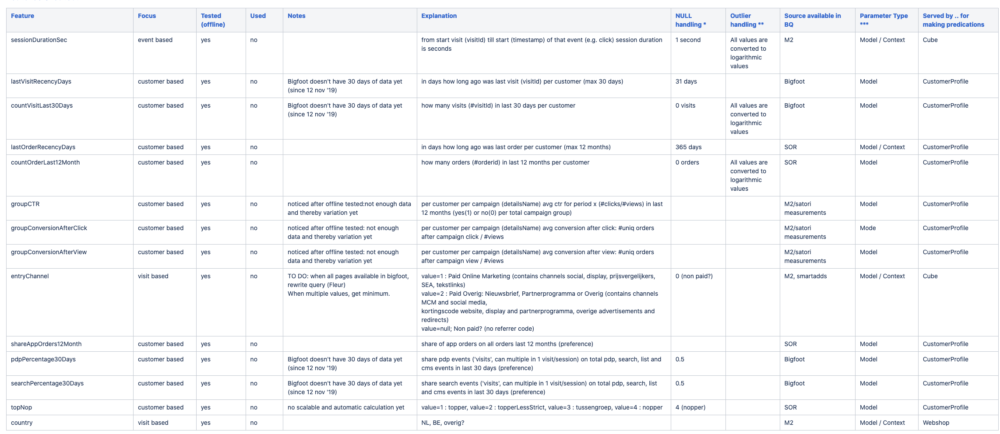
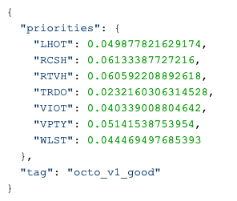
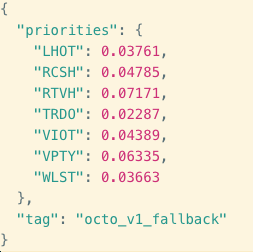
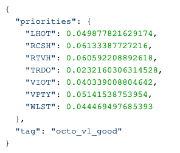
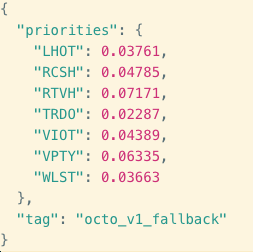
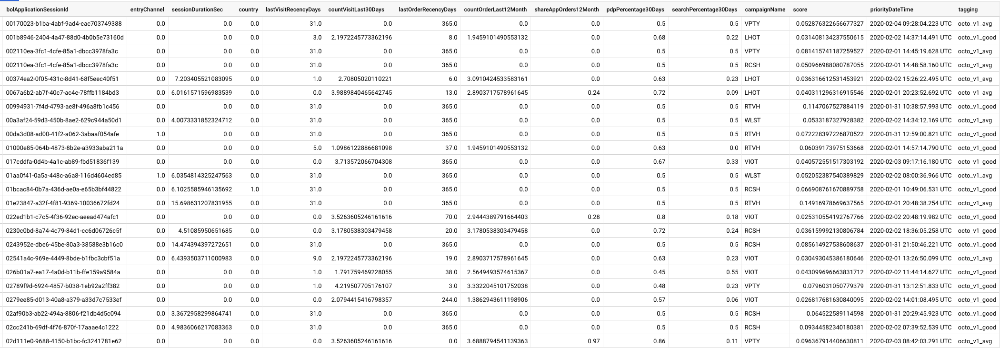
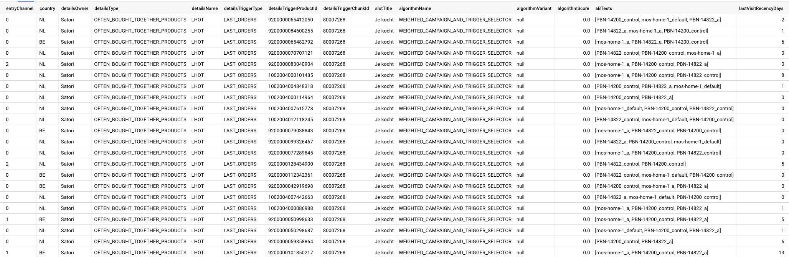
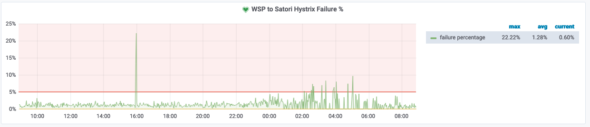
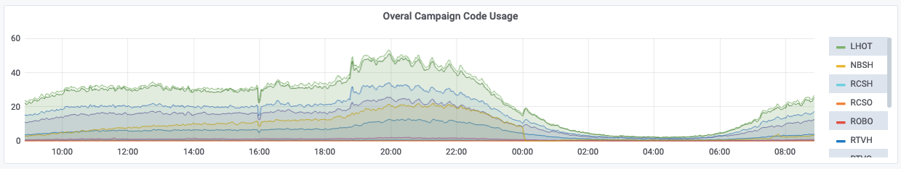
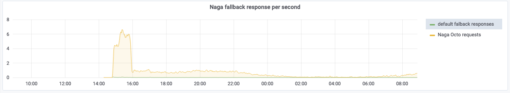

TBD
Danu Pranantha
Abstract
Bringing predictive models to production
Providing an engaging customer experience is no longer optional but is instead demanded by customers. The 5th edition of Salesforce "State of Marketing Report" reveals that 60% of customers expect companies to step up in anticipating their needs. This involves a variety of ways such as personalized content, intelligent chat-bots, personal pricing, richer, seamless, and natural interactions. One of ways to better customer experiences is becoming AI (artificial intelligence) driven company.
AI and its subset, Machine Learning (ML), provide avenues for delegating complex decisions to intelligent entities based on facts (data). For instance, a model we created predicts customers intention during visit based on their historical visits. Using cloud infrastructure we can scalable create and train various models and use them for various purposes within the company.
Having several ML models in production, we would like to share our experiences in deploying models into production. We will provide a list of things you need to consider when you are planning to train a model and bring it to production.
Abstract
Embrace our f*ck ups - go faster full circle with your own ML model
Is data science new to your team? Do you want to bring an ML (machine learning) model to production? How hard can it be?
Having several ML models in production, we would like to share our experiences in bringing these models live. We will provide a list of handy tips, considerations and what you can do to (NOT) f*ck up things.
What is model?
- Statistical models which describe data
- Mathematical models which represent a real-world process
- Data models which show patterns
Model artifact that is created by a training process. -- Amazon Machine Learning Dev. Guide
ML Lifecycle
- Hypotheses
- KPI, feature engineering, and data collection if needed
- Feature selection, model training, evaluation, and selection
- Model deployment for inference
- Experimentation
KPI, feature engineering, and data collection
- Lesson 1: Brainstorm with people of different roles!

KPI, feature engineering, and data collection
- Lesson 2: Don't assume that the source data are readily available!
KPI, feature engineering, and data collection
- Lesson 3: Make sure you have access to the source data you need
Feature selection, model training, evaluation, and selection
- Lesson 4: Make sure features are available for both training and prediction
Feature selection, model training, evaluation, and selection
- Lesson 5: Align features for both training and inference
Feature selection, model training, evaluation, and selection
- Lesson 6: Model versioning
Model deployment for inference
- Lesson 5: Align features for both training and inference
Model deployment for inference
- Lesson 7: Choose performing framework for serving/inference
Model deployment for inference
- Lesson 8: You can't test enough!
Model deployment for inference
- Lesson 9: Provide instruction for fallback scenario if model is unreachable
 



Model deployment for inference
- Lesson 10: Measure as much as you can


Model deployment for inference
- Lesson 10: Measure as much as you can
 
Model deployment for inference
- Lesson 11: Backward compatibility
Model deployment for inference
- Lesson 12: Setup essential dashboards
  
Model deployment for inference
- Lesson 13: Invest on performance!
Experiments
- You train it, you deploy it, you run it, you measure it, you conclude it with a ...